Repair Procedures
Replacement
Seat Assembly Replacement
1. Remove the seat track mounting cover.
2. After loosening the seat assembly mounting bolts, remove the seat assembly (A).
Tightening torque :
29.4 - 53.9 N.m (3.0 - 5.5kgf.m, 21.7 - 39.8 lb-ft)
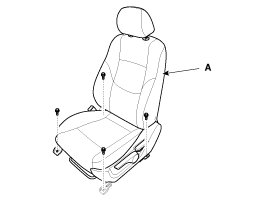
3. Disconnect the buckle (A), seat warmer (B), SAB (C), WCS (D) connectors.
[Driver's]
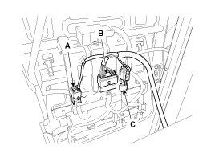
[Passenger's]
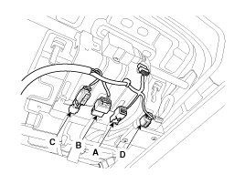
4. Installation is the reverse of removal.
CAUTION:
SEAT MOUNTING BOLT INSTALLATION PROCEDURE
- Set the seat into the most rearward position. Check that each slide is locked, and then tighten the front mounting bolt temporarily.
- Set the seat into most forward position. Check that each slide is locked, and then Tighten the rear mounting bolt completely.
- Set the seat into the most rearward position. Check the front mounting bolt completely.
- Check that the seat operates to and for smoothly and the locking portion locks properly.
Front Seat Outer Shield Cover
CAUTION:
- When prying with a flat-tip screwdriver, wrap it with protective tape, and apply protective tape around the related parts your hands.
- Put on gloves to protect your hands.
1. After loosening the recliner mounting screws, then remove the recliner lever (A) and height lever (B).
2. After loosening the mounting screw, then remove the front seat outer shield cover (C).
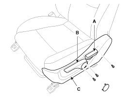
3. Installation is the reverse of removal.
NOTE:
- Replace any damaged clips.
- Make sure the connector is plugged in properly.
Seat Back Board Replacement
1. Remove front seat assembly.
2. Push the lock pin (B), remove the headrest (A).
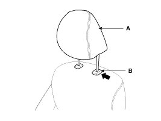
3. Remove the protector (A).
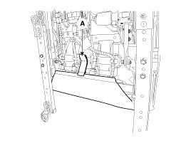
4. Disconnect the connector (A).
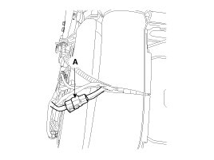
5. Push the clips (B) from the front back cover (A).
CAUTION:
- Push the middle area of clip using the flat head screwdriver.
- Be careful not to damage the clip.
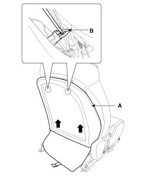
6. Push the protector (A) by the seat back frame.
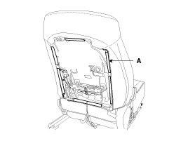
7. Remove the protector (A).
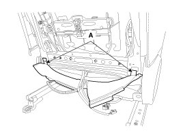
8. Pull out the headrest guides (A) while pinching the end of the guides, and remove them.
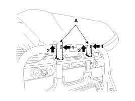
9. Remove the seat back cover (A) from the frame.
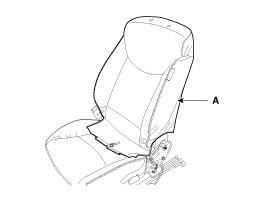
10. After removing the velcro tape (B) on the front of seat back and remove the seat back cover (A).
CAUTION:
- When removing the hog-ring clip, remove the hog-ring clip with pressing the wire not to separate the wire from the sponge.
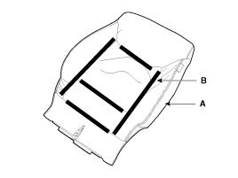
11. Installation is the reverse of removal.
NOTE:
- Make sure the connector is plugged in properly.
- Replace any damaged clips.
Seat Cushion Cover Replacement
1. Remove front seat assembly.
2. Remove the front shield outer cover.
3. Remove the protector (A).
4. Disconnect the connectors (A).
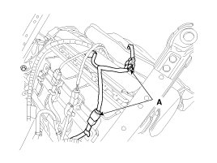
5. Push the protector(A), and then seat cushion cover (C) from the frame(B).
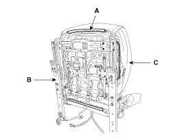
6. Remove the seat cushion cover (A) from the frame.
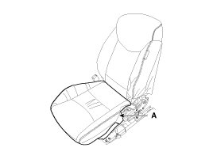
7. After removing the velcro tape (B) on the front of seat cushion and remove the seat cushion cover (A).
CAUTION:
- When removing the hog-ring clips, remove the hog-ring clips with pressing the wire not to separate the wire from the sponge.
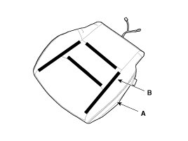
8. Installation is the reverse of removal.
NOTE:
- Make sure the connector is plugged in properly.
- Replace any damaged clips.
Seat Frame Replacement
1. Remove the following items :
A. Front seat
B. Front seat back cover
C. Front seat cushion cover
2. After loosening the mounting screw, then remove the front seat shield inner cover (A).
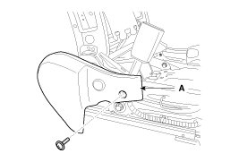
3. After loosening the mounting bolts, then disconnect the seat back frame (A) and seat cushion frame (B).
Tightening torque :
44.1 - 53.9 N.m (4.5 - 5.5 kgf.m, 32.5 - 39.8 lb-ft)
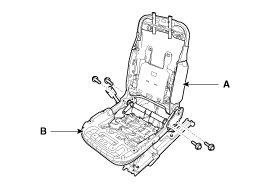
4. Installation is the reverse of removal.
NOTE:
- Remove the side air bag for replacing side air bag installation seat.
- Before service, be fully aware of precautions and service procedure relevant to air bag.